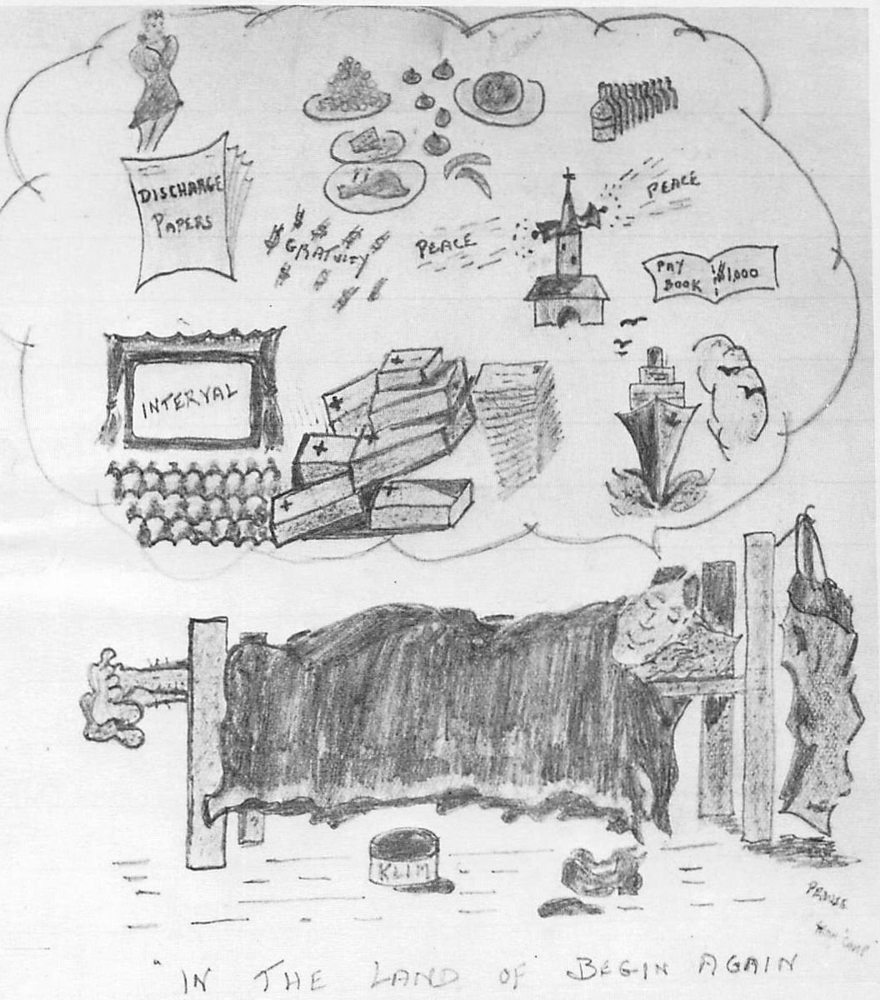

Epilogue

We landed at Westcott around 6:00 p.m., and were greeted by an air force band. We were quickly sprayed with delousing powder, handed cigarettes and treated to a light supper served by women of the WAAF. The highlight of the meal was the white bread, which, after our long diet of black bread, looked and tasted like cake. The same night, we were taken by truck to a reception camp at Wotton near Aylesbury, where we were washed, fed, issued with new uniforms and put to bed.
On April 16, we awoke to a beautiful breakfast of bacon and eggs, the thing I dreamt about in prison camp and missed the most. After breakfast, we had our medicals and X-rays, then lined up for pay parade. On the 17th, we were trucked to Aylesbury, then to London, then to No. 1 Canadian Reception Depot in, of all places, Aldershot!
In passing through London, I recalled the ‘Battle of Britain’ and the terrible bomb damage. It seemed even worse now from the effect of the V-Bombs. (A V-Bomb depot was later discovered in Nordhausen, one of our work kommandos in Stalag IXC. Mass graves were also found there.)
In Aldershot, two of my former Provost buddies arrived to cart me off for wining and dining. One was now a major, later to become lieutenant colonel, and the other a captain. I felt a twinge of jealousy, being only a corporal but, after a few drinks and a lot of reminiscing, rank was forgotten. I actually began to feel enriched by the POW experience.
The following day, I was sent to London for interrogation about treatment, beatings, my two escapes and any known collaborators. Finally, I was photographed and finger-printed, then returned to Aldershot.
We were allowed any number of passes for leave but I delayed my trips until I could regain some of the fifty pounds I had lost in weight. I wasn’t too proud of my appearance and wanted to lose the gaunt look and fill out some of the hollow spots before visiting friends and sightseeing. Eventually, I took advantage of the passes to revisit many spots on the south coast such as Brighton, Bournemouth and Eastbourne, not to mention many trips to London.
In London, all an ex-POW had to do was to show his dog tags and he received 1,000 Canadian cigarettes and a forty-pound food parcel from Canada House, a service man’s club. I took my second parcel to relatives in Birmingham, as they were still on war ration coupons which weren’t much good.
My first parcel barely made it past Trafalgar Square. A buddy and I shouldered our food cartons and headed for the station, but before we could reach it, we were hustled by street characters wanting to know if we had anything to sell. We finally gave in and opened the cartons full of canned fruits, meats and vegetables. We finished selling everything and then returned to Canada House for another parcel. They were very understanding and obliged us since we were former prisoners but they told us not to come back a third time.
After visiting the relatives in bombed-out Birmingham, my next trip was to Scotland to say adieu to my escape buddy and relive our experiences over a few drinks. Oddly, Tommy and I weren’t too voluble. We had shared a harrowing chapter of our lives but now we respected each other’s feelings and need for privacy.
On the return trip, I ran into another ex-POW who asked me what ‘loot’ I had brought out of Germany. When I told him of the badges, tin hat and Hitler snap shots he laughed and said, ‘I mean this kind of loot’. He then unknotted a handkerchief and showed me a small heap of diamonds which just about dazzled me. I had passed boarded-up jewellery stores after release but it hadn’t entered my head to go in and ‘acquire’ some of the contents. Maybe it was just as well.
During the train ride back to barracks, I found an empty compartment, stretched out and fell asleep immediately. My sleep was troubled with dreams of massive air raids as I dodged and ducked falling bombs. This was followed by a Jerry lunging at me with his fixed bayonet. As I was unarmed, I tried to kick the rifle from his hands. He dropped it and grabbed the heel and toe of my heavy army boot. At this moment, I awakened to find an English soldier and his girl friend, who had entered the compartment while I slept, struggling to hold my lashing foot as I tried to kick their teeth out! I was embarrassed and apologized. The soldier’s only comment was, ‘It’s OK, Canada. I have those kind of dreams also.’ This helped but I still felt foolish and changed compartments.
My last trip was to London on May 8. It was ‘VE Day’ and I’ll never forget the wild celebration in Piccadilly Circus. The pandemonium was a fitting end to almost six years of war. I personally had a feeling of thankfulness that I had come through OK and, apart from some injuries, was relatively healthy. I was beginning to regain my weight and had lost that starved look. The main feeling I had was of being free, free to come and go wherever I wanted. The other important part of freedom was being able to buy food and drink; the glorious feeling of waking up to a meal of bacon and eggs, toast and hot coffee; the absolute thrill of a dish of vanilla ice cream; the wonder of white bread.
On May 29, we entrained for Liverpool and embarked on the SS Vullendam, which apart from ex-prisoners, carried Canadian war brides to their new homes. We sailed on the 30th and the following day ran into rough seas. The rest of the journey was uneventful and it was a joy to land in Halifax on June 7 at 11:00 p.m. The next day, we boarded a train for Montreal, reaching the city on June 9.
On July 14, approximately five years and three months after my enlistment, I received my discharge and commenced the task of putting my life back together.
It was a relief to be home again and great to be alive.